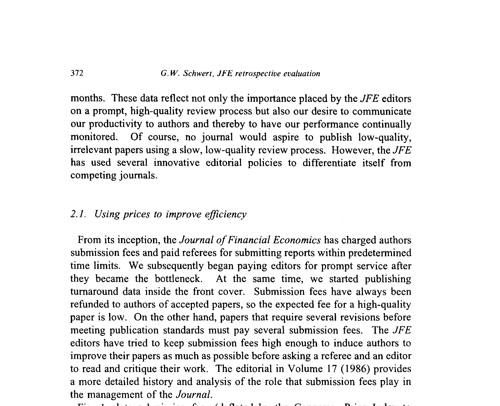
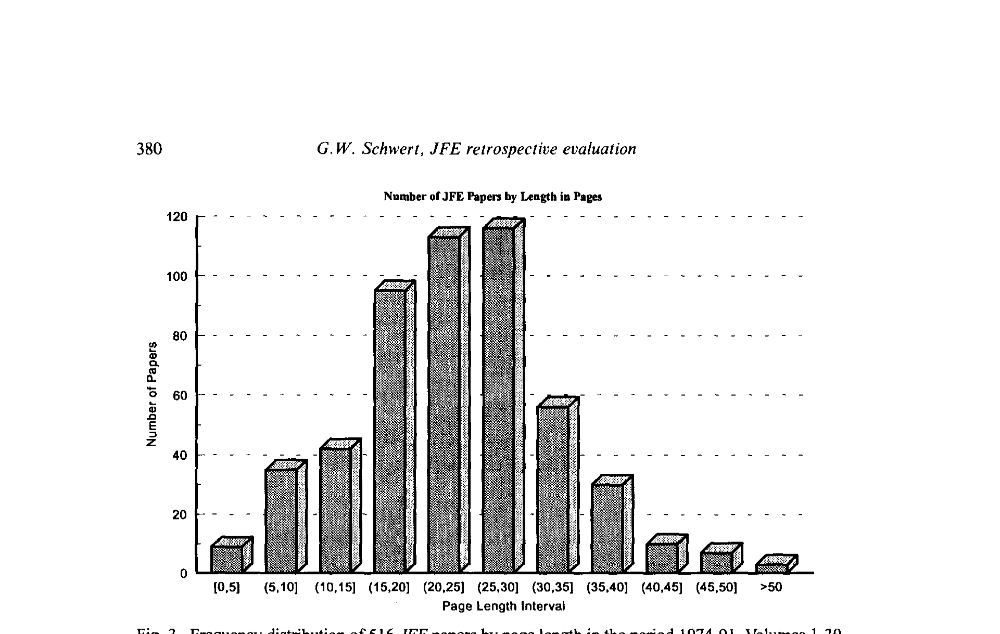
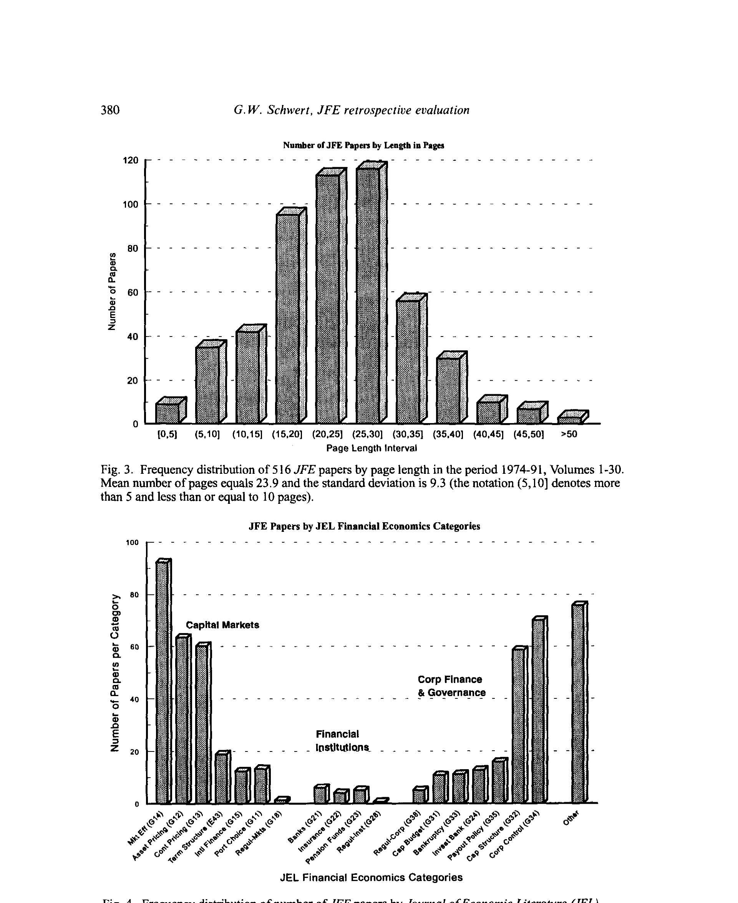
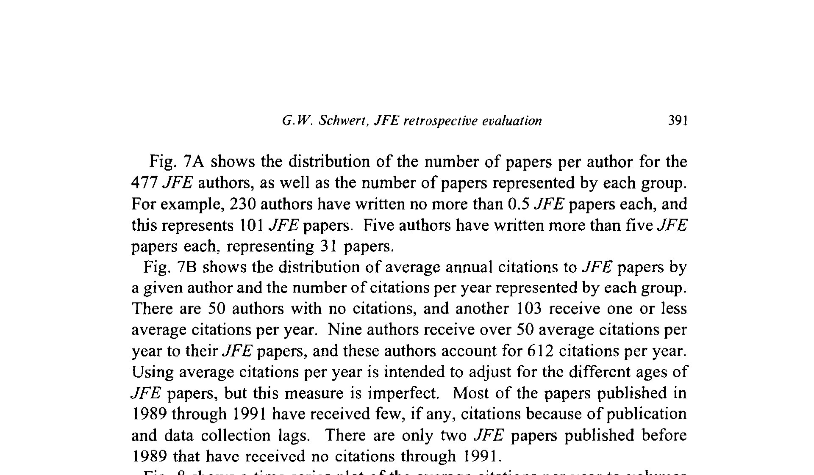
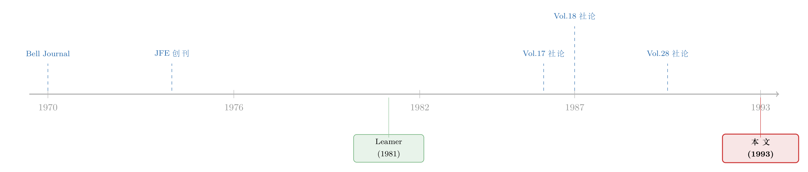

一本顶刊，把自己活成了一道供求曲线
本文读的是 Schwert (1993, Journal of Financial Economics)：一篇为庆祝 JFE 第 30 卷而写的「自我体检」。作者用 1974–91 年间发表的 516 篇论文、477 位作者、136 家机构、16,231 次引用的数据，回答一个朴素却尖锐的问题——一本研究「价格与激励」的期刊，自己有没有照着这套理论来办刊？答案是：有，而且办成了。
1 一个不太像论文的论文
先说一句可能让你意外的话：这篇被收进 JFE 第 33 卷、占了整整 369–424 页的「文章」，其实是一篇社论 (editorial)。它没有假设检验，没有识别策略，甚至没有一个回归系数。它的作者 G. William Schwert——后来 JFE 的主编之一——干的事情，更像是给一本杂志做了一次彻底的「财务与体检报告」。
那为什么值得我们认真读它？
因为这本杂志研究的是金融经济学，而金融经济学的内核，是价格如何配置稀缺资源、激励如何塑造行为。于是一个几乎带点黑色幽默的问题自然冒了出来：一本天天告诉别人「要用价格、要讲激励」的期刊，轮到经营自己时，会不会也老老实实地用价格、讲激励？
这篇文章的全部魅力，就在于它对这个问题给出的回答是肯定的，而且给得有理有据。它不是一份流水账，而是一份「把经济学用在自己身上」的案例研究。我们这篇评述，就围绕这一个核心反复讲透：JFE 是怎样把自己活成了一道供求曲线的。
2 稀缺的不是论文，是审稿人
办一本顶级期刊，最稀缺的资源是什么？
不是稿子。1974 年 Michael Jensen 创刊以来，投稿量一路上扬，从来不愁。真正稀缺的，是愿意认真、快速读稿子的审稿人。审稿是一桩典型的「公共品」生意：评审花的是自己的时间，受益的却是作者、期刊和整个学界。按经济学的常识，公共品一定供给不足——审稿人会拖，会敷衍，会搭便车。
接着，一个自然的问题是：当所有人都面临这套激励，凭什么有一本杂志能让评审又快又好？
JFE 的答案，简单到近乎挑衅——给钱，并且把账本挂在墙上。
从创刊起，JFE 就向作者收投稿费 (submission fee)，同时向在 21 天内交回报告的审稿人付费。这在当年极其罕见：JFE 是历史上第二家为「准时审稿」付钱的经济学期刊，第一家是 1970 年由 AT&T 出资、待遇优渥的 Bell Journal。更关键的是，1986 年投稿费涨到 $275 之后，准时交报告的审稿人还能额外拿到 1/3 的投稿费折扣——也就是说，肯为同行审稿的人，自己再投稿时面对的「有效费率」更低。
这是一记漂亮的双向激励：它没有假装能买断评审的时间（那点钱当然补偿不了），但它足以把「读这篇 JFE 稿子」在评审的工作队列里往前挪一挪。
这里藏着一个容易被忽略的精妙之处：投稿费对被接收的论文是全额退还的。所以一篇高质量的稿子，期望费率其实很低；而那些反复退改、几进几出的稿子，要交好几次费。投稿费因此不是「门票」，而是一道逼作者在投稿前先把论文打磨好的自我筛选机制——把审稿人的时间留给真正成熟的工作。（关于这套定价逻辑后来如何被进一步强化，可参见《一封涨价通知里的微观经济学：当一本顶刊开始给「投稿」定价》。）
那么，价格这只手到底有没有形成一条像样的「市场」？
文章的图 1 给出了最直观的证据：它把 1973 年 8 月到 1991 年 12 月间，JFE 的月度投稿量和实际投稿费（以 1973 年 8 月美元计、用 CPI 平减）画在了一起。两条线一起往上走——投稿费在涨，需求不但没被吓退，反而水涨船高。Schwert 在这里还不忘开了个学过联立方程的人才懂的玩笑：你若把投稿量对费用做散点图，会看到一条向上倾斜的「曲线」，但这绝不是因为需求弹性为正，而是需求曲线本身在逐年外移——对 JFE 编辑服务的需求，在十八年里持续膨胀。

Figure 1: plots submission fees (deflated by the Consumer Price Index to
3 一个审稿人，和一封人人都看得到的信
光有价格还不够。速度只是服务的一个维度，作者更想要的是能让论文变好的批评。JFE 在「反馈质量」上做了几件和同行很不一样的事，而其中一件，堪称整套设计里最聪明的一步。
首先是反直觉的一招：大多数稿子只送一位审稿人。
这听起来像是偷工减料——少一个人把关，岂不是更冒险？但 Schwert 的逻辑是经济学的：审稿人越多，「搭便车」越严重，每个人都觉得「反正还有别人会仔细看」。只用一位审稿人，等于把责任焊死在他一个人身上，搭便车问题随之消失。代价当然是单个评审的特异判断会放大作者的风险，而 JFE 用「编辑亲自盯报告、必要时充当第二审稿人」来对冲这份风险。
然后是真正关键的一步——也是 JFE 与几乎所有同行最不同的地方：审稿人总会收到一份编辑写给作者的信的副本。
为什么这一条如此重要？因为它把一个原本封闭的双边关系，变成了一个三方都能互相校准的反馈回路。如果编辑认为评审看走了眼，这个判断会同时传达给评审和作者；而 JFE 最好的审稿人往往本身就是作者，于是编辑得以用一种前后一致的方式，把期刊的标准同时灌输给「写的人」和「评的人」。久而久之，整本杂志对「什么是好论文」形成了一种可传递、可复制的共识。
这套机制的成本是几乎不付钱的同行劳动，收益却是整本期刊的质量声誉——这也正是金融学界赖以运转的隐形账本（同一条暗线，可参见《撑起一本顶刊的，是三百个不收钱的人》）。
4 它还顺手定义了「一篇 JFE 论文长什么样」
把激励讲清楚之后，文章转向了一个更具体、也更有意思的问题：JFE 这套机制，到底「生产」出了什么样的论文？
一个被反复强调的政策是：JFE 不看绝对长度。
这是一句很有分量的话。同时期的 American Economic Review 明文规定投稿不得超过 50 页手稿；而 JFE 的态度是——宁可要一篇内容上乘的长文，也不要拆成几篇加起来更长的短文。图 3 把这条政策的后果画了出来：516 篇论文的页数分布，均值 23.9 页、标准差 9.3 页，其中有 20 篇超过了 40 个版面页。而 Schwert 特意点明，这些「超长」论文里，不少恰恰是被引用最多的文章。

Figure 3: Frequency distribution of 5 16 JFE papers by page length in the period 1974-91, Volumes l-30
这其实是一个关于「测度」的小寓言：当你用「页数上限」去管理一本期刊，你管的是成本；当你放弃页数、只看内容，你赌的是质量。JFE 选择了后者，而引用数据替这个赌注作了证。
JFE 还有一条几乎是它招牌的规矩：每张表和每幅图都要尽量自洽 (self-contained)——读者不看正文，也应当能读懂表里、图里在说什么。理由很现实：很多读者是先扫一遍摘要、表、图和结论，再决定要不要花时间细读；还有很多人把 JFE 的表图直接当课堂讲义用。为此，编辑部会给「修改重投」的作者寄去一整包优秀表图的范例，外加一份「如何处理脚注」的说明（JFE 的态度是：脚注越少越好）。
如果说前面讲的是「激励」，这一节讲的就是 JFE 对表达 (exposition) 的执念——而这恰恰是这本杂志最难被量化、却最深入人心的政策之一。
至于这些论文都在研究些什么，图 4 按 JEL 的金融经济学分类给出了一张地图：516 篇论文带着 736 个 JEL 标签，公司金融与治理、一般金融市场、金融机构……各据一方（一篇被归入 n 类的论文，每类记 1/n 篇）。

Figure 4: Frequency distribution of number of JFE papers by Journal of Economic Literahm (JEL)
5 反转：用「引用」给自己打分，靠不靠谱？
讲到这里，故事似乎太顺了：一本用价格和激励武装到牙齿的杂志，办得风生水起。但真正关键的一步在于——你怎么证明它「成功」了？
JFE 的创始团队早就想清楚了这个问题。在 Merton 的建议下，编辑们从一开始就把对 JFE 论文的引用，当作衡量期刊影响力的主要尺子。这本身就是一个意味深长的选择：用一个外部的、市场化的指标（别人引不引你），而不是内部的自我评价，来给自己打分。
于是文章的下半部，几乎全是引用数据。结论相当硬气：按 SSCI 1989 年的「影响因子」（即 1989 年对 1987–88 年所发论文的引用数，除以这两年的论文数）排名，JFE 的影响因子是 3.557，在全部 1,400 种社会科学期刊里排第 17，在经济学期刊里仅次于 Journal of Economic Literature（5.455）和 Econometrica（3.599），高过 JPE（2.321）和 AER（1.739）；在商科/金融组里，JFE 更是头名，把 JME（2.446）、JAE（2.417）和 Journal of Finance（1.402）都甩在身后。
但 Schwert 没有止步于「我们排第几」。于是反转出现了——他主动把引用分析最经典的那套质疑摆上了台面，引了 Edward Leamer (1981) 的一段话。Leamer 的大意是：你们当然能给「引用数」找出一万个该被无视的理由——有跟风、有自引、有引用阴谋、有贬损式引用、有对编辑和评审的贿赂、有谄媚的学生……「可是，为什么你的论文没能掀起跟风？为什么你不多发一点、多自引一点？为什么你的阴谋失败了？为什么你不去当编辑？为什么你的学生不在乎你的死活？」
这段话引得极妙。它没有否认引用数的缺陷，而是把举证责任反手推给了质疑者——如果引用真的这么容易操纵，你为什么不去操纵它？
引用数据还透出一些 JFE 政策的「因果」回声。比如那些特刊 (special issues)：1974–88 年间，特刊论文的年均被引是每篇 6.8 次，几乎是普通刊期 3.5 次的两倍。又比如 1989 年起在 Ruback 主持下开设的临床论文 (clinical papers)：到第 30 卷共发了 17 篇，年均被引 1.7 次，和同期非临床论文的 2.1 次相差无几——考虑到临床论文的写作目的本就不同，这个数字已经说明它们在以相似的方式影响着文献。

Figure 8: shows a time series plot of the average citations per year to volumes
这里有一个必须诚实标注的「数据瑕疵」：1989–91 年 JFE 出版严重滞后（第 25 卷第 2 期标着 1989 年 12 月，实际 1990 年 12 月才寄出；第 30 卷第 2 期标 1991 年 12 月，1992 年 4 月才寄出）。论文「在架」的时间被人为缩短，这几卷的被引数会人为偏低好几年。图 8 里那几年的下沉，相当一部分是这个测量假象，而非影响力真的滑坡。
6 文献脉络
如果把这篇文章放进一条研究脉络里，它处在一个略显特殊的位置：它既不是纯理论，也不是纯实证，而是「把激励经济学应用于学术出版这门生意」的一次自我记录。
这条线的起点，可以追溯到 1970 年 Bell Journal 开创的「为准时审稿付费」——这是把价格引入同行评审的早期实验。1974 年 JFE 创刊，把这套思路系统化、并叠加了投稿费、反馈回路、自洽表图等一系列政策。1981 年 Leamer 对引用指标的辩护，为「用引用衡量影响力」提供了方法论上的弹药。此后 JFE 在第 17 卷（1986）专门写社论分析投稿费的角色，又在第 18 卷（1987）、第 28 卷（1990）的社论里持续披露排名。本文（1993）则是这一系列自我审视的集大成者，把十八年的数据一次性铺开。

在本博客里，这篇文章并不孤单。JFE 与 RFS 的「元文本」——致谢、编委名单、主编年报、页码改 DOI 的公告——本身就构成了一个观察学科运转方式的独特窗口（可参见《一页致谢里的「隐形账本」：金融学界靠什么免费运转》、《当一封信有了 DOI：读 RFS 主编上任一年的「年终报告」》与《页码消失的那一天：JFE 给每篇文章发了一个「身份证」》）。Schwert 这篇，是其中最「数据密集」、也最像一份经营报表的一篇。
7 评论与延伸（Q&A + 研究方向）
(a) 几个可能的疑问
Q：这到底算不算一篇「论文」？把它当研究读，会不会读错了？
它在体例上是社论，没有识别策略，也不该用「因果推断」的标准去苛求它。但它有一个清晰的论点（JFE 用价格与激励办刊，并以引用为证）、一套系统收集的数据（516 篇论文的全量引用、作者与机构信息），以及对自身指标局限的诚实讨论。把它当成一份描述性的案例研究来读，是恰当的；把它当成「价格能提升期刊质量」的因果证据来读，则是过度解读——它没有、也无法提供反事实。
Q：投稿费这么贵，会不会把买不起的人挡在门外，从而损害公平？
这是最值得担心的一点，而文章没有正面回应。投稿费对被接收的论文全额退还，所以对「写得好、一次过」的作者负担很轻；但对需要反复退改、或预算紧张的年轻学者，多次缴费确实是真金白银的门槛。Schwert 的论证集中在「效率」（筛掉不成熟的稿子、补偿审稿人）上，对「准入公平」基本回避——这是这套机制在分配维度上一个未被审视的角落。
Q：用引用数衡量影响力，Leamer 那段反驳真的站得住吗？
Leamer 的话很机智，但它是一种修辞性的反驳，不是统计上的证明。它有效地堵住了「引用全是噪声」这种极端论调，却没有处理更细致的偏差——比如领域规模不同导致的引用基数差异、特刊带来的「自我引用集群」、热门主题的引用通胀。文章自己也承认数据库有错误，只是主张这些错误「不大、也不系统」。所以更稳妥的读法是：引用数是一个有偏但有信息量的代理变量，方向大体可信，绝对数值要打折。
Q：「只用一位审稿人」难道不是在拿作者的命运赌运气？
风险确实更高——单个评审的特异偏见会被放大。JFE 的对冲不是「再加一个审稿人」，而是让编辑深度介入：编辑亲自盯报告、必要时充当第二意见，并通过「评审能看到编辑给作者的信」这一机制，持续校准评审的判断。本质上，它把「用人数分散风险」换成了「用编辑的人力资本担保质量」。这是否更优，取决于编辑团队的质量——对 JFE 这种顶配编委会也许成立，对一本普通期刊则未必可复制。
Q：特刊年均被引 6.8 vs 普通刊期 3.5，能说明特刊「更好」吗？
不能直接这么推。这里至少有两重选择效应：特刊往往主动约稿、聚焦正当红的新领域（如市场有效性、公司控制权市场），主题热度本身就会抬高引用；而且参与特刊的常是该领域的领军人物。所以这 6.8 更可能反映「主题选择 + 作者选择」的合力，而非「特刊这种形式」的独立贡献。要分离它，需要一个反事实：同样这批论文若发在普通刊期，引用会是多少。
Q：出版滞后导致的引用偏低，会不会把整篇文章的乐观结论也带偏？
影响有限但真实存在。1989–91 这几卷因延迟寄送，被引被人为压低数年，所以图 8 末端的下沉不能解读为影响力衰退。但文章的核心结论（十八年累计 16,231 次引用、稳居经济学期刊前列）依赖的是早年成熟卷期的数据，这部分不受滞后影响。所以滞后主要污染的是「最近趋势」的解读，而非「历史地位」的判断——读者只要不把末端几年的下滑当真，就不会被误导。
(b) 几个可能的研究问题与提案
1. 投稿费改革的「准自然实验」
【经济故事】JFE 在 1986 年把投稿费提到
$275并引入「准时审稿打折」，这是一次清晰的政策跳变。如果能找到费率调整的多个时点，就能检验：涨价究竟筛掉了更多低质量投稿（效率假说），还是同时也挤走了部分高质量但预算紧的作者（公平代价）？ 【可行性】中。需要 JFE（及对照期刊）逐年的投稿量、拒稿率、最终发表论文的事后引用分布。投稿层面的数据通常不公开，需期刊配合；若只能用「已发表论文」做样本，则面临严重的选择偏差。识别上可用同期未改费率的同类期刊做双重差分 (difference-in-differences, DiD)，但平行趋势难以保证。
2. 「单审稿人 vs 多审稿人」对论文质量与速度的因果效应
【经济故事】JFE 的单审稿人政策是一个鲜明的制度变量。在搭便车与特异风险之间，它选了前者去对冲。一个自然的问题是：这套制度到底让审稿更快了多少、又是否以更高的「错杀/错收」率为代价？ 【可行性】低到中。理想数据是不同期刊审稿人数量的随机或准随机变异，加上论文事后质量的代理（引用、复制成功率）。现实中审稿流程数据极难获取，且审稿人数往往内生于稿件难度。除非某期刊做过受控实验（如随机分配 1 vs 2 审稿人），否则识别极其困难。
3. 把「自洽表图」政策当成可测量的处理
【经济故事】JFE 要求表图自洽，这是一个罕见的、可操作化的「表达质量」政策。如果用机器可读的方式量化论文表图的「自洽程度」（信息密度、是否依赖正文），能否预测论文被引、被当作课堂讲义/教材引用的概率？这把「表达影响传播」这条软命题变成了硬实证。 【可行性】中到高。表图可从 PDF 批量抽取并用版面分析 + 大模型打分；引用数据有 SSCI/Web of Science。难点是因果——表图质量与论文质量高度共线，需要控制内容质量（如用同主题、同期刊配对）才能逼近表达本身的边际贡献。
4. 期刊声誉的「网络」结构：谁引谁，决定了什么
【经济故事】文章的图 12、13 已经勾勒了 JFE 与 Journal of Finance 等期刊之间的相互引用。把这张「期刊引用网络」补全并动态化，可以问：一本期刊的影响力，多大程度上来自它在引用网络中的中心位置，而非单纯的论文质量？这与公司债/信用市场里「谁持有、谁与谁相连决定价格」的网络直觉异曲同工。 【可行性】高。期刊层面的相互引用数据公开可得，网络指标（中心性、PageRank）成熟。主要风险是描述性强、因果性弱——很难说清是「位置带来影响」还是「影响带来位置」。
8 我的判断
先说贡献。这篇文章最大的价值，不在任何一个具体数字，而在它示范了一种自我审视的姿态：一本研究激励的期刊，愿意把自己的投稿费、拒稿率、周转时间、引用分布全部摊开，并主动引用对自身指标最尖锐的批评（Leamer 1981）来「反驳自己」。在学术出版日益被影响因子绑架的今天，回头看 1993 年这份坦诚的「经营报表」，反而有一种朴素的说服力——它把「办刊」真正当成了一门可以用经济学分析的生意，而且言行一致。
再说担忧。作为「证据」，它的短板也很清楚：通篇没有反事实。投稿费提升了质量吗？单审稿人是更优的制度吗？特刊形式本身有独立贡献吗？这些「政策→结果」的命题，文章全部以描述性数据和叙事来支撑，无法排除选择效应（顶刊本就吸引顶尖作者）与因果倒置（是好政策带来了好论文，还是好论文容忍了这些政策？）。它说服我「JFE 很成功」，但没能、也无意说服我「成功因为这些政策」。
最后说我想看到的。我最想要的，是把这篇 1993 年的「快照」延长成一部面板：把 1991 年之后到今天的 JFE，连同它的几家主要竞争对手，按年放进同一张表里——投稿费、周转时间、单/多审稿人制度的变迁、引用网络的位置，逐年对账。唯有把横截面的「我排第几」变成时间序列的「制度如何演化、影响如何随之改变」，我们才可能从这份优秀的描述性报告，往前走一步，触到一点点因果的边缘。
在那之前，这篇文章最好的读法，或许是把它当成一面镜子：一本研究市场的杂志，照见了自己也是一个市场。
参考文献
- Schwert, G.W. (1993). The Journal of Financial Economics: A retrospective evaluation (1974–91). Journal of Financial Economics 33(3), 369–424.
- Leamer, E.E. (1981). 对引用计量争议的评述（如 Schwert (1993) 正文所引；原文出处见该社论脚注）。
说明：Schwert (1993) 在讨论表达规范时还按「作者-年份」提到了 Hamermesh (1992)、McCloskey (1985)、Twain (1962)、Wydick (1978)、Zimmerman (1989) 等关于写作的文献；因正文未给出完整标题，此处不强行补全，谨在此列出以备查考，以免编造书目信息。